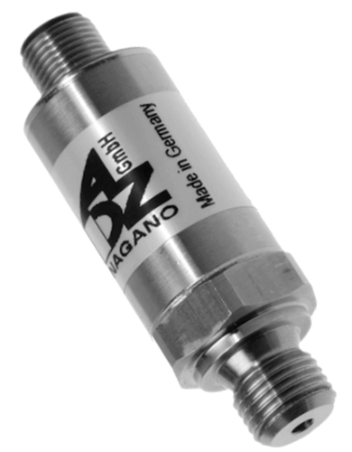
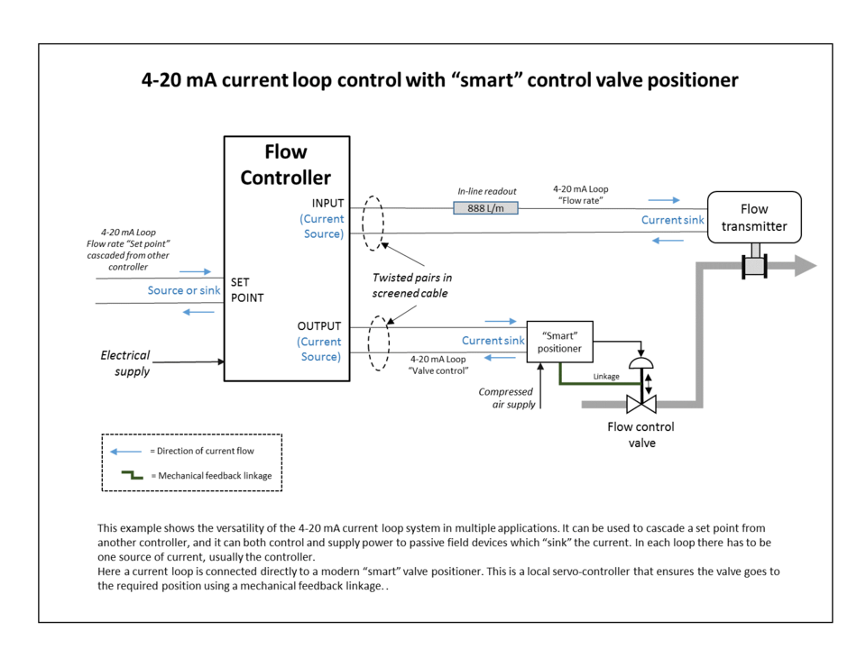

Calibrate a 4–20 mA pressure input
A graphics screen reports 75 kPa while a pressure calibrator reports 50 kPa. Follow the signal from current to voltage to engineering units until you can say where the error entered.
A current calibrator with a source mode, 250 Ω 1% or better resistor rated at least 0.25 W, fused meter and leads. Start with the screen-only readings if a calibrator is unavailable. Use a passive receiver or resistor on the isolated bench.
Trace the loop from the transmitter to the controller
A transmitter drives a current in a two-wire loop. A shunt is a known resistor that converts that current into voltage for the receiver. With 250 Ω, 4 mA makes 1 V and 20 mA makes 5 V. At 20 mA the resistor dissipates 0.10 W. Give it headroom with a 0.25 W or larger part.

Photo by Bro37. Original photo · Public domain.


Photo by Dougsim, resized. Original photo · CC BY-SA 4.0.

Prove the receiver using a known current
- At zero output and with power off, wire the calibrator’s source output through the resistor and back to the calibrator. Keep an external loop supply out of this setup. Simulate mode needs an externally powered loop. Confirm which terminals and mode your meter manual shows.
- Measure voltage across the resistor. Set 4, 8, 12, 16 and 20 mA, then reverse the order. Record the set current, measured voltage, indicated pressure and direction at each point. A 1% shunt alone might move the 5 V reading by 0.05 V.
- On a supervised controller trainer, repeat against its documented passive current input. Some receivers have an internal shunt. Use the terminal and common intended for that input before applying the current.
| Current | Ideal reading | Expected pressure |
|---|---|---|
| 4 mA | 1.00 V | 0 kPa |
| 8 mA | 2.00 V | 25 kPa |
| 12 mA | 3.00 V | 50 kPa |
| 16 mA | 4.00 V | 75 kPa |
| 20 mA | 5.00 V | 100 kPa |
Watch on YouTube · Compare sourcing the current yourself with simulating a transmitter in an existing powered loop. Identify the current terminals before wiring. How To Use a Process Meter - (5 Step Guide to Source / Simulate 4-20mA) · Instrumentation & Control.
Find the error before changing the scaling
Case A. Your resistor measures 3.00 V and the display reads 75 kPa. Check the displayed raw value. At a correct 12 mA raw reading, look at the programmed endpoints and units. A 0–150 kPa scale maps 12 mA to 75 kPa. Record exactly which range was wrong.
Case B. At a 16 mA setpoint the resistor measures 3.60 V. Prove its resistance with the output off. A 225 Ω resistor would explain 3.60 V at 16 mA. If the resistor is 250 Ω, check actual delivered current and the source’s compliance-voltage limit against the loop burden. No valid reading at all may mean open wiring or missing loop supply.
A transmitter check requires a known physical pressure source or calibrated reference. This exercise proves the input and its scaling. For the field training task, look at the National Training Register unit for pressure measurement. UEEIC0041.
Hand over a reproducible record
Keep both directions of sweep and the original configuration. On the training setup, use ±1 kPa as an illustrative acceptance tolerance. Circle any point outside it. Repeat the sweep after correcting the one confirmed issue. The manufacturer or contract sets the actual tolerance on site.
T16 · Signals: sampling, decibels, noise and 4–20 mA loops
T24 · Measurement loading, tolerance and datasheets
T35 · Calibration, uncertainty and condition measurements